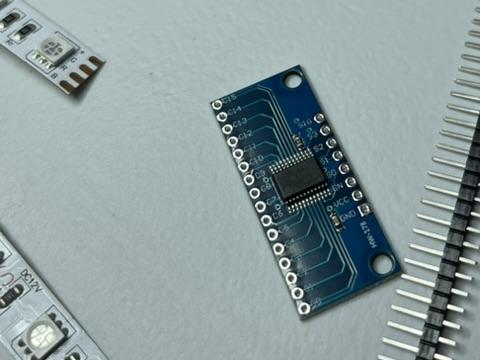
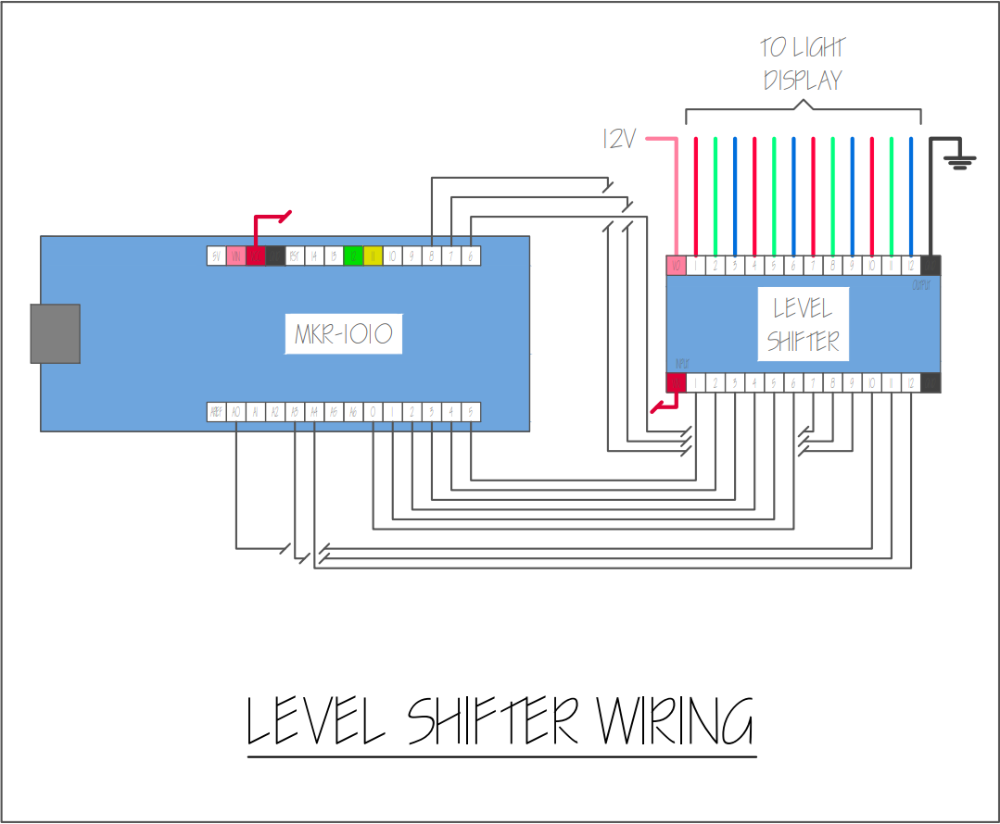
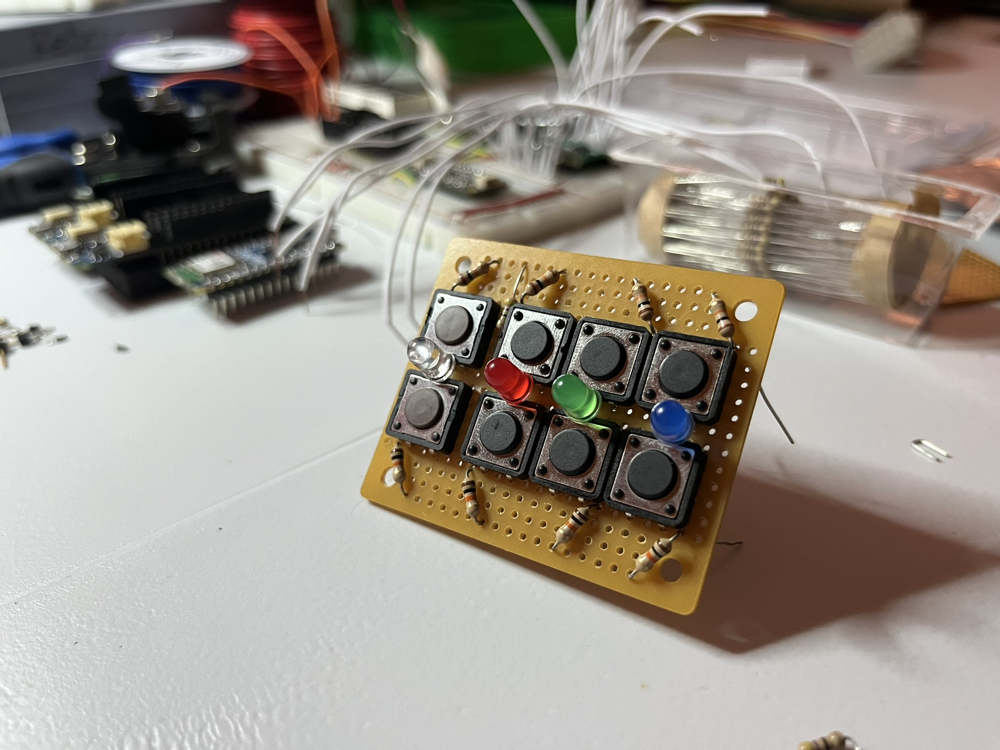
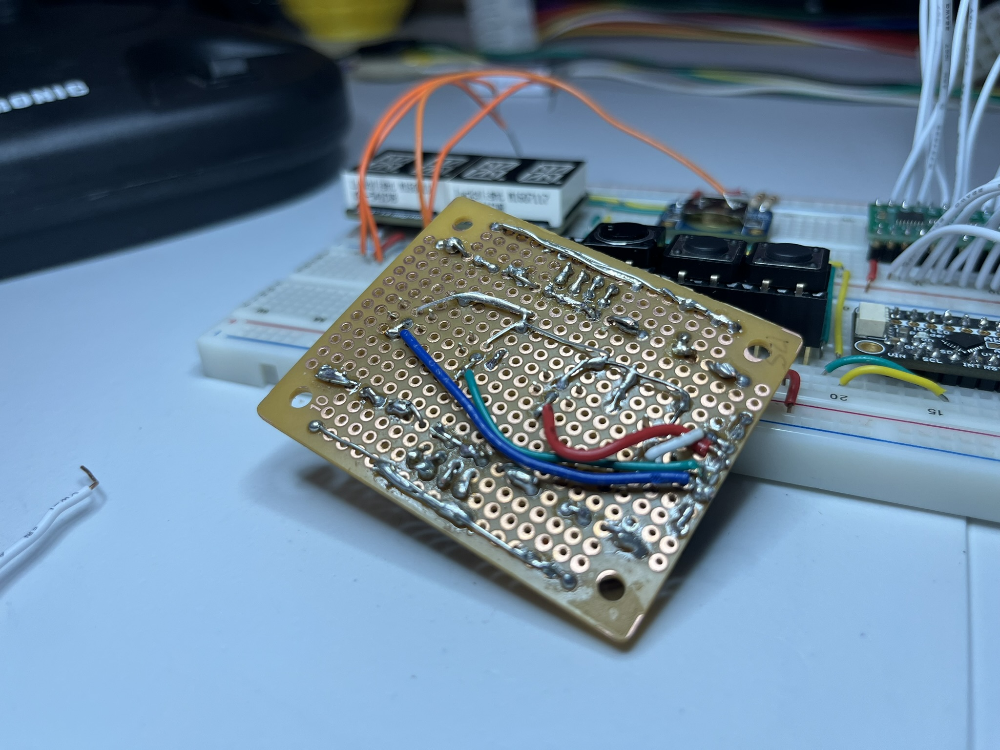

Smooth Operation
My experiments with an IO expander, level shifter, and a lesson learned.
IO Expander Analog Write Fails Me
Although the code for the IO expander compiles successfully, it doesn’t produce the expected variable output voltage. The analogWrite function accepts values from 0 to 255 (0xFF) and normally setting it to 128 would result in half the output voltage compared to setting it to 255. However, I discovered that the output voltage remained the same whether the pin was set to 128 or 255.
In a previous test, I connected an LED and cycled through output values from 0 to 255, observing the LED brightening. But the differences in output voltage didn’t scale as anticipated; there might be a variation up to a certain point, beyond which the voltage levels off.
// pin_num0 and pin_num1 produce the same output voltage
analogWrite(pin_num0, 128);
analogWrite(pin_num1, 255);The digitalWrite function still works but I haven’t the digitalRead yet. If digitalRead works, we might use this IO expander for the user control panel input buttons. But my confidence level in this piece of hardware is low, so we’ll see if I actually end up using it.
Now I’m back to using ALL the Arduino PWM output pins to wire up the four LED strips. I’m a bit apprehensive about maxing out the available analog output pins, so I’ve ordered a new multiplexer, the CD74HC4067, as a backup solution for expanding analog outputs. The new parts have arrived, so I’ll be soldering and testing them this weekend… 🤞

12V Level Shifter Works!
In this project, an Arduino output pin provides up to 3.3V, insufficient for the 12V needed by the RGB LED strips. So we’re using a level shifter to boost the voltage to 12V.
In recent testing, I connected the Arduino’s analog output to the level shifter input and the RGB strip to its output, and… it was a success! 🥳 The light cycled through colors as programmed, though transitions were slightly choppy, a topic I’ll address later in this post.

Lesson Learned: Don’t Use a Member Variable to Define a Global
After successfully testing the level shifter, I quickly integrated the three additional ColorClock objects into the code, assigning analog output pins for each new strip. However, upon connecting more LED strips and running the code, the board appeared to freeze. Subsequent attempts to upload new code failed as the computer no longer detected the Arduino’s serial port. Resetting the board and reseating the USB cable eventually restored the serial port connection. Despite this, re-uploading the program continued to cause the board to freeze again 😵💫
I barely touched the code! I was worried there was something on the board shorting so it took me about a day of swapping out hardware, doing incremental testing, and meticulously comparing Git commits before I identified the problem.
In the last commit where everything broke, I made one tiny optimization in an effort to reduce the use of ‘magic numbers’. In the definition of the time periods for each color clock, I used a static member variable, TimeCalcs::SEC_IN_HR.
float cc0_period = 6.0 / TimeCalcs::SEC_IN_HR;
float cc1_period = 12.0 / TimeCalcs::SEC_IN_HR;
float cc2_period = 30.0 / TimeCalcs::SEC_IN_HR;
float cc3_period = 60.0 / TimeCalcs::SEC_IN_HR;I should note that the three cc#_period variables used are globals in the main driver file. It seemed like the driver file was not aware of the value of TimeCalcs::SEC_IN_HR by the time it ran that part of the code. When I removed this reference to TimeCalcs::SEC_IN_HR it worked again 😅
float cc0_period = 6.0 / 3600.0;
float cc1_period = 12.0 / 3600.0;
float cc2_period = 30.0 / 3600.0;
float cc3_period = 60.0 / 3600.0;I’ll probably create some #defines at the top of the file to keep it looking a little cleaner.
Smooth Transitions
At first, I thought updating the color output every second would be enough since our original design had a 24-hour cycle time. But once we added a user-controlled light that allows participants to set cycle times as short as six seconds, I realized that smoother color transitions were essential for seamless aesthetics.
I am using a real-time clock module to output the current time, which the program uses to determine the color and the module’s smallest granularity is one second. However, Arduino has a built-in function that outputs the current number of milliseconds since the program started, so I added a function to output the current millisecond within each second.
int FluxClock::get_milli(byte crnt_sec)
{
static byte prev_sec = 0;
static long int prev_millis = 0;
long int crnt_millis = millis();
// Resent millisecond count if its a new second
if (crnt_sec != prev_sec)
{
prev_sec = crnt_sec;
prev_millis = crnt_millis;
}
return static_cast<int>(crnt_millis - prev_millis);
}The two videos included below demonstate the differences when updating the color output every second versus every millisecond. The three RGB LED strips in the videos cycle through all hues in the color wheel at different rates: 6 seconds, 12 seconds, and 30 seconds.
🌈
🌈
OS Reinstallation is Always an Option
In the period of time that I started writing this post, I experienced an issue where the Ubuntu partition on my desktop decided not to connect to the internet. I struggled for a few days with all sorts of network settings before I realized it wasn’t worth the trouble and just reinstalled Ubuntu in its entirety. As I was going through my whole new environment setup process, I documented most of what I did to streamline the next time I have to start over 😅
User Interface Software Design Begins!
The next step in the ColorClock saga is to design the software implementation for the participant-facing user control panel. I wired up a little prototype for testing. The final design will use arcade buttons embedded in an enclosure that will house the electronics.

🌈
